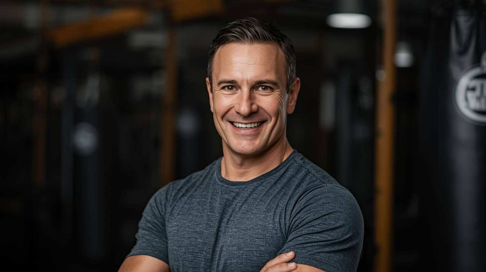

Hi, my name is Maurice Lidman and my background is in boxing. I competed as an amateur in my early years and now share my knowledge and expertise as a coach. For over three decades, I’ve been involved in the boxing scene, running boxing classes with passion and enthusiasm. The atmosphere in our classes is fun, exciting, and highly energised. Whether it’s your first class or you’re an intermediate-level boxer, you’ll gain a lot by participating. Boxing is one of the best cardiovascular workouts available.
ML Strength was founded in 2020 by Maurice Lidman with one simple goal: to create gyms that focus on real results, not gimmicks. Maurice wanted a space where people could train like athletes, at any level, in a supportive, no-pressure environment. Starting with a single location in Ashgrove, the gym quickly became a community hub for health-conscious individuals looking for more than just a typical fitness center. Over the years, ML Strength expanded across Brisbane, opening clubs in Chermside, Graceville, Westlake, and Brisbane City, all while keeping the same welcoming, high-energy atmosphere that started it all. Today, ML Strength continues to grow, inspiring members to push their limits and embrace a healthier, stronger lifestyle.
At ML Strength, our mission is to inspire and empower every member to achieve their personal health and fitness goals, no matter their experience or fitness level. We are committed to providing a welcoming, supportive, and motivating environment where individuals feel encouraged to challenge themselves and grow stronger, both physically and mentally. Through expert coaching, diverse group classes, state-of-the-art equipment, and a community-driven approach, we aim to make fitness accessible, enjoyable, and sustainable for everyone who walks through our doors. Our ultimate goal is to help members build confidence, resilience, and a lifelong passion for a healthy lifestyle.